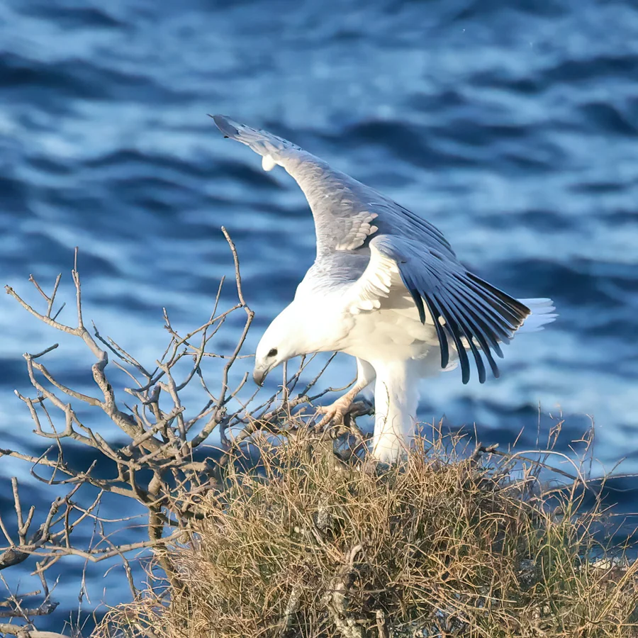

鸟类 · 动物界
白腹海雕 Haliaeetus leucogaster

大型海岸猛禽，成鸟头颈与腹部雪白、翼下黑白分明，常在海面低空滑翔捕鱼。
- 分类
- 门脊索动物门纲鸟纲目鹰形目科鹰科属海雕属
- 栖息环境
- 热带与亚热带海岸、岛屿、河口、大型湖泊
- 地理分布
- 南亚、东南亚至澳大利亚沿海，中国华南沿海与海南、台湾有分布
- 保护级别
- IUCN 无危（LC）；中国国家二级保护动物
物种志
白腹海雕体长 70–85 cm，翼展可达 2 m。成鸟头、颈、胸和腹部白色，背与翼上灰褐，翼下黑白对比明显，尾短而圆；幼鸟整体褐色，需数年才逐渐变为成鸟羽色。它常单独或成对在海岸、岛屿、河口和大型湖泊上空盘旋，发现水面鱼群后俯冲抓取，也会取食海蛇、海龟幼体和腐肉。
白腹海雕分布于南亚、东南亚至澳大利亚的海岸与岛屿，中国华南沿海、海南、台湾等地有记录。它通常在高树或悬崖上筑大型巢，多年重复使用。栖息地开发、渔业干扰和环境污染是主要威胁；在中国被列为国家二级保护动物。
形态与习性
- 体长70–85 cm，翼展可达 2 m
- 成鸟头颈腹白，翼下黑白对比明显
- 幼鸟整体褐色，需数年变为成鸟羽色
- 食性鱼类为主，也吃海蛇、海龟幼体与腐肉
- 繁殖在高树或悬崖筑大型巢，多年复用
趣味知识
- 白腹海雕是典型的海岸猛禽，常在离海面很低的位置滑翔。
- 成鸟雪白的头颈与腹部，让它和多数深色海雕很容易区分。
- 它在中国属于国家二级保护动物，观察时不要靠近巢区。